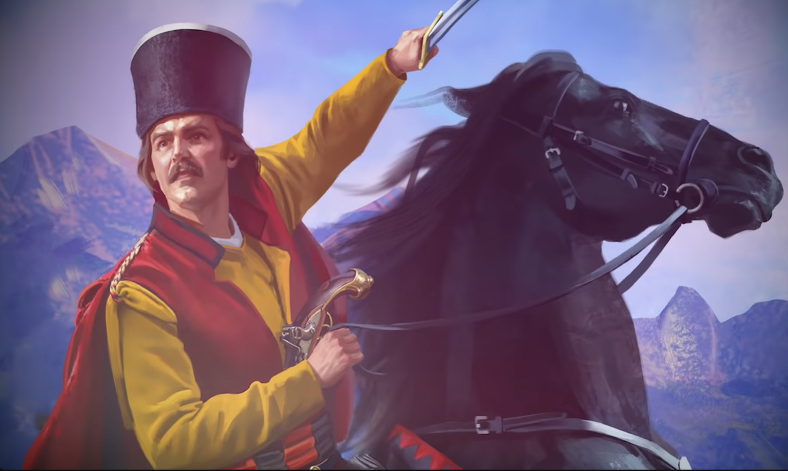
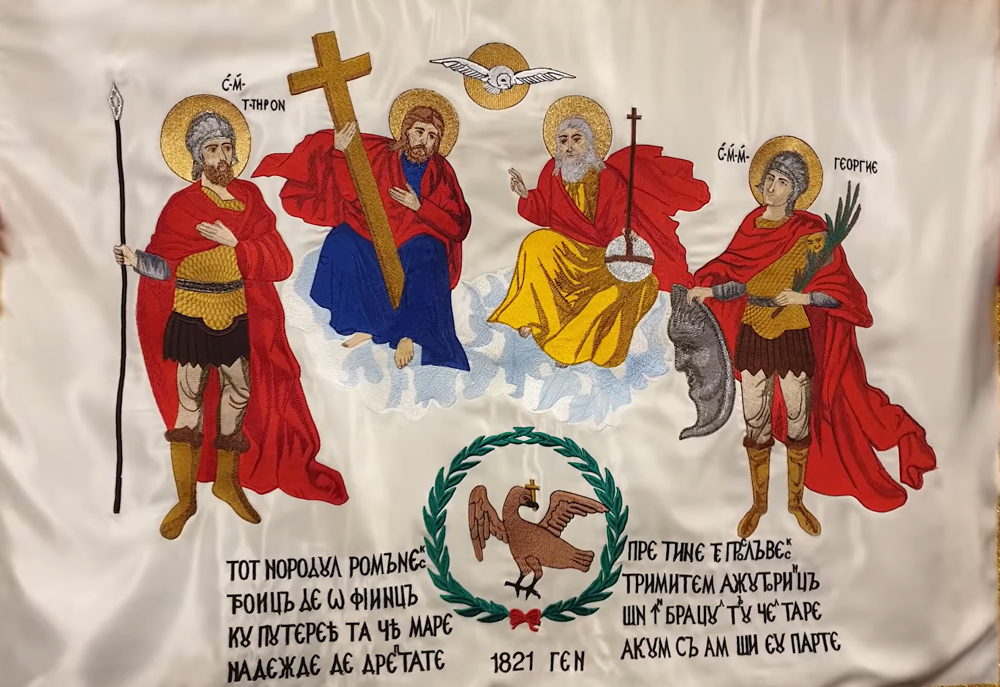
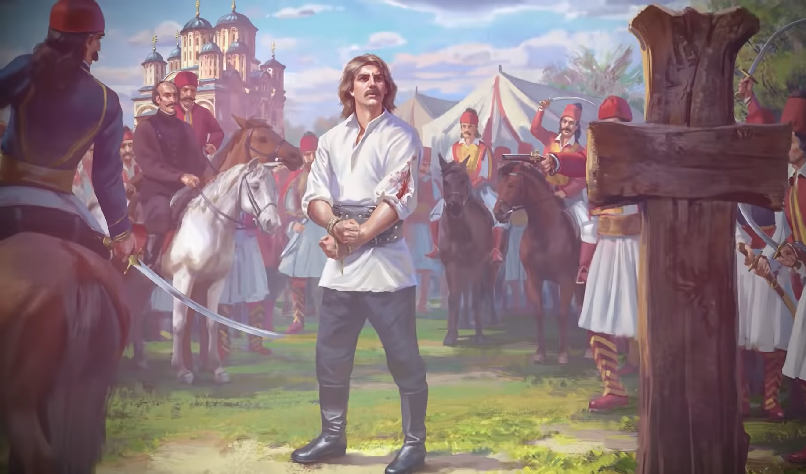
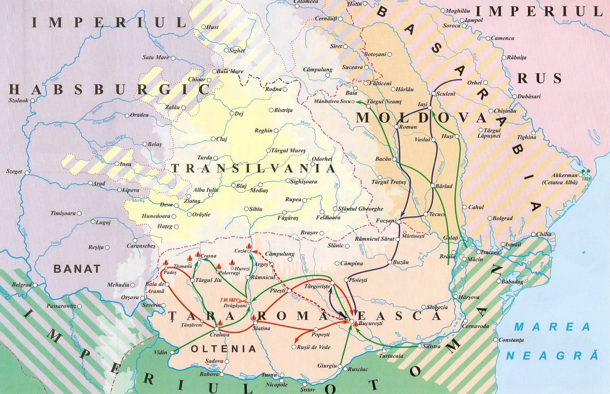

Imagini




| Conducători | Tudor Vladimirescu | Iancu Jianu | Dimitrie Macedonski | Ioan Solomon | Alecu Filipescu |
| Data nașterii | 1780 | 1788 | 1783 | 1793 | 1775 |
| Data morții | 1821 | 1843 | 1843 | 1865 | 1856 |
| Vârsta | 41 | 55 | 60 | 72 | 81 |
| Locul nașterii | Vladimir | Caracal | Macedonia | Pleșoi | București |